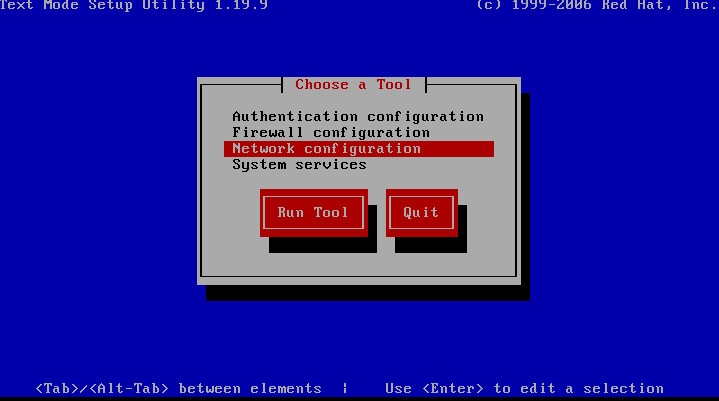
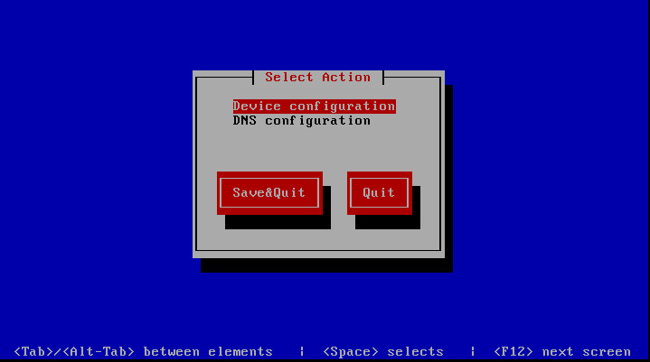
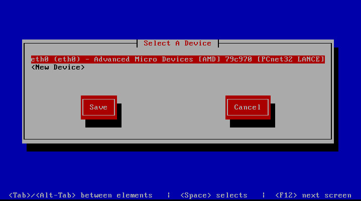
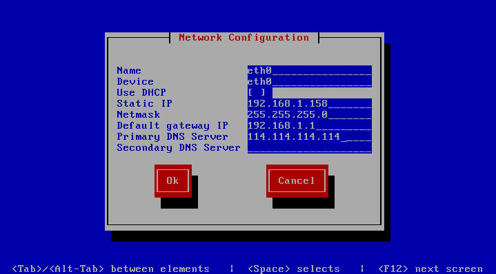

1、切换所在目录
cd
2、显示当前所在目录
pwd
3、建立目录
mkdir
4、查看目录
ls
5、删除目录
rmdir
6、显示指定目录下所有内容的目录树
tree
7、创建空文件
touch 文件名
8、删除文件或目录
rm -rf 文件名
9、查看文件内容，从头到尾
cat 文件名
10、分屏显示文件内容
more 文件名
11、显示文件头
head -n 行数 文件名
12、显示文件尾
tail 文件名
13、链接文件
ln -s 源文件 目标文件
14、复制文件或目录
cp 源文件 目标位置
15、剪切文件或目录
mv 源文件 目标位置
16、修改权限
chmod
17、属主和属组命令
chown
18、查看命令的帮助
man 命令名
19、查看命令的常见选项
命令 --help
20、查找命令的命令，同时看到帮助文档位置
whereis 命令名
21、按照文件名查找
find 查找位置 -name 文件名
22、查找符合条件的字串行
grep “字符串” 文件名
23、管道符，命令1的执行结果，作为命令2的执行条件
命令1 | 命令2
24、压缩
tar -zcvf 压缩文件名 源文件
25、解压缩
tar -zxvf 压缩文件名 解压缩同时解打包
26、两种重启方式
1、shutdown -r now
2、reboot
27、光盘挂载
mkdir /mnt/cdrom
mount /dev/cdrom /mnt/cdrom
28、光盘卸载
umount /mnt/cdrom
29、测试网络连通性
ping
30、查询本机网络信息
ifconfig
划分分区
/ （根分区）
swap分区 （交换分区，内存2倍，不超过2GB）
推荐分区
/boot （启动分区，200MB）
设置Linux的IP地址
[root@localhost ~]# setup //通过setup工具设置IP地址
第一步
第二步
第三步
第四步
[root@localhost ~]#
vi /etc/sysconfig/network-scripts/ifcfg-eth0把ONBOOT=“no”改为ONBOOT=“yes”
[root@localhost ~]#
service network restart//重启网络服务
挂载命令：mount /dev/cdrom /mnt/cdrom/
新安装会没有文件目录 创建文件：在mnt目录创建：mkdir /mnt/cdrom/
使用mount查看文件有没有以下：
/dev/sr0 on /mnt/cdrom type iso9660 (ro)
进入CentOS-Media.repo修改成
baseurl=file:///mnt/cdrom/
# file:///media/cdrom/
# file:///media/cdrecorder/
gpgcheck=1
enabled=1
把CentOS-Base.repo改成CentOS-Base.repo.bak
mv CentOS-Base.repo CentOS-Base.repo.bak